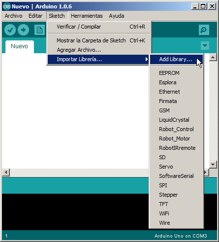
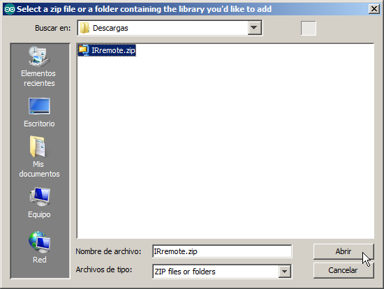
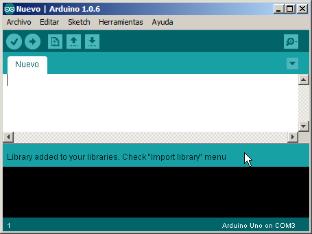
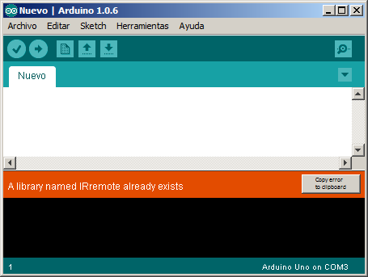
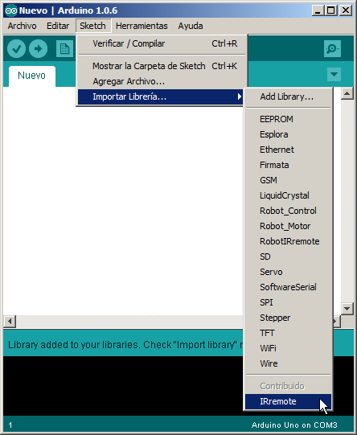
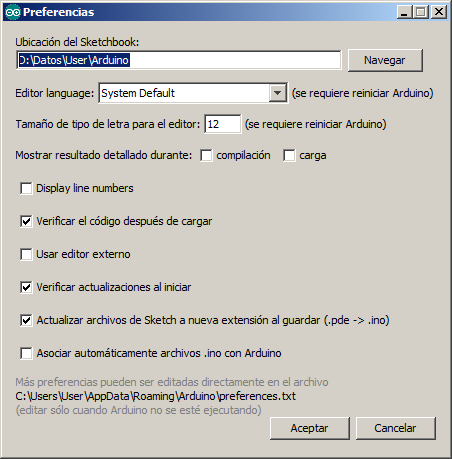
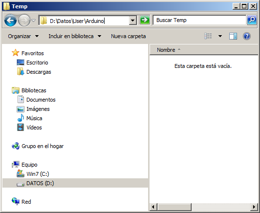
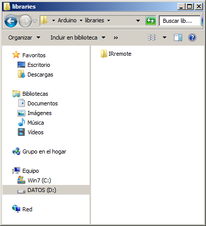

Add a library to Arduino¶
The Arduino environment comes by default with the most common libraries. But, sometimes, it is necessary to add a new library so that Arduino can handle other devices such as TFT panels or infrared emitters and receivers. This page explains step by step how to add a new library or how to update an existing library in the Arduino graphical environment.
Add a new library to Arduino¶
Copy the library in *.zip format to a known directory on your hard drive.
Open the Arduino graphical environment.
In the Arduino menu, select
Program...Include Library...Add .ZIP Library...Find the hard disk directory where the library is located
Select the *.zip file with the library and press [Open]
If the library has been imported correctly, a message will appear informing about it. 'Library added to your libraries.'
If the library is already installed, an orange error message will appear indicating that the library already exists. 'A library name _ _ _ already exists'.
Si se quiere actualizar la librería es necesario primero eliminar la librería antigua.
Check that Arduino has the new library in the list of installed libraries.
Program... Include Library...
Delete an Arduino library¶
To update a library that is already installed in the Arduino environment, it is necessary to delete the old library first. These are the steps to follow:
Select in the menu
File... Preferences...You can also press the keys [Ctrl] + Comma
Copy the 'Sketchbook Location' path by pressing [Ctrl] + c
In the file explorer, paste the copied path and press enter.
In the explorer, inside the Sketchbook path, select the folder Arduino... libraries...
In this location you can see the currently installed libraries.
Select the library you want to delete and press the delete key or press the right mouse button and 'Delete'
See the libraries installed in Arduino¶
To see which libraries Arduino already has installed, it is necessary to select it in the menu.
Program... Include Library...